<title>Plans as a Repo</title>
<meta name="claude:viewport-fit-sides" content="cover">
<link rel="preconnect" href="https://fonts.googleapis.com">
<link rel="preconnect" href="https://fonts.gstatic.com" crossorigin>
<link rel="stylesheet" href="https://fonts.googleapis.com/css2?family=Newsreader:opsz,wght@6..72,500;6..72,600&family=IBM+Plex+Sans:wght@400;500;600&family=IBM+Plex+Mono:wght@400;500&display=swap">
<style>
  /* Layout: one reading column; the decision log runs down a commit rail, figures break slightly wider than the text. */
  :root {
    --bg: #f6f8f8;
    --surface: #ffffff;
    --ink: #172426;
    --muted: #55686b;
    --rule: #d7e0e1;
    --accent: #0b6870;
    --accent-soft: #e2f0f1;
    --add: #1a7f37;
    --add-soft: #e6f4ea;
    --del: #c53030;
    --del-soft: #fbeaea;
    --mod: #8a6100;
    --mod-soft: #fbf3dc;
    --pin: #0b6870;
    --pin-ink: #ffffff;
    --font-display: "Newsreader", Georgia, "Times New Roman", serif;
    --font-body: "IBM Plex Sans", system-ui, -apple-system, "Segoe UI", sans-serif;
    --font-mono: "IBM Plex Mono", ui-monospace, "SFMono-Regular", Menlo, monospace;
  }
  @media (prefers-color-scheme: dark) {
    :root:not([data-theme="light"]) {
      --bg: #0f1719; --surface: #152022; --ink: #e4ecec; --muted: #9bb0b2; --rule: #29393c;
      --accent: #5cc4cc; --accent-soft: #163236; --add: #56c271; --add-soft: #17301f; --del: #f07a7a; --del-soft: #3a1c1c;
      --mod: #e3b341; --mod-soft: #352b12; --pin: #5cc4cc; --pin-ink: #0f1719; color-scheme: dark;
    }
  }
  :root[data-theme="dark"] {
    --bg: #0f1719; --surface: #152022; --ink: #e4ecec; --muted: #9bb0b2; --rule: #29393c;
    --accent: #5cc4cc; --accent-soft: #163236; --add: #56c271; --add-soft: #17301f; --del: #f07a7a; --del-soft: #3a1c1c;
    --mod: #e3b341; --mod-soft: #352b12; --pin: #5cc4cc; --pin-ink: #0f1719; color-scheme: dark;
  }

  * { box-sizing: border-box; }
  body {
    background: var(--bg);
    color: var(--ink);
    font: 400 16px/1.6 var(--font-body);
    padding-left: max(16px, env(safe-area-inset-left, 0px));
    padding-right: max(16px, env(safe-area-inset-right, 0px));
    padding-block: 48px 96px;
  }
  .page { max-width: 1040px; margin: 0 auto; display: flex; flex-direction: column; gap: 64px; }
  .prose { max-width: 66ch; }
  h1, h2, h3 { font-family: var(--font-display); font-weight: 600; text-wrap: balance; margin: 0; line-height: 1.15; }
  h1 { font-size: clamp(2.4rem, 6vw, 3.6rem); letter-spacing: -0.01em; }
  h2 { font-size: 1.9rem; }
  h3 { font-size: 1.3rem; }
  p { margin: 0; }
  a { color: var(--accent); }
  code, .mono { font-family: var(--font-mono); font-size: 0.88em; }
  .eyebrow { font: 500 0.75rem/1 var(--font-mono); letter-spacing: 0.08em; text-transform: uppercase; color: var(--muted); }
  section { display: flex; flex-direction: column; gap: 20px; }

  /* Hero */
  .hero { display: flex; flex-direction: column; gap: 18px; }
  .hero .lede { font-size: 1.2rem; color: var(--muted); max-width: 62ch; }
  .meta { display: flex; flex-wrap: wrap; gap: 10px 28px; font-size: 0.9rem; color: var(--muted); }
  .meta b { color: var(--ink); font-weight: 600; }
  .status { display: inline-flex; align-items: center; gap: 8px; font: 500 0.8rem/1 var(--font-mono); color: var(--mod); background: var(--mod-soft); padding: 6px 10px; border-radius: 999px; align-self: flex-start; }
  .status::before { content: ""; width: 7px; height: 7px; border-radius: 50%; background: currentColor; }

  /* The brief */
  .brief { list-style: none; margin: 0; padding: 0; display: grid; grid-template-columns: repeat(auto-fit, minmax(240px, 1fr)); gap: 12px; }
  .brief li { background: var(--surface); border: 1px solid var(--rule); border-radius: 8px; padding: 14px 16px; font-size: 0.95rem; min-width: 0; }
  .brief li span { display: block; font: 500 0.72rem/1.4 var(--font-mono); color: var(--muted); margin-bottom: 6px; letter-spacing: 0.04em; }

  /* Figures with pins */
  figure { margin: 0; display: grid; grid-template-columns: minmax(0, 1fr) 300px; gap: 20px; align-items: start; }
  .shot { position: relative; border: 1px solid var(--rule); border-radius: 8px; overflow: hidden; background: var(--surface); }
  .shot img { display: block; width: 100%; height: auto; }
  .pin {
    position: absolute; transform: translate(-50%, -50%);
    width: 26px; height: 26px; border-radius: 50%;
    background: var(--pin); color: var(--pin-ink);
    font: 600 13px/26px var(--font-mono); text-align: center;
    box-shadow: 0 0 0 3px color-mix(in srgb, var(--pin) 25%, transparent), 0 2px 6px rgb(0 0 0 / 0.25);
  }
  .pin.del { background: var(--del); box-shadow: 0 0 0 3px color-mix(in srgb, var(--del) 25%, transparent), 0 2px 6px rgb(0 0 0 / 0.25); }
  .pin.add { background: var(--add); box-shadow: 0 0 0 3px color-mix(in srgb, var(--add) 25%, transparent), 0 2px 6px rgb(0 0 0 / 0.25); }
  figcaption { display: flex; flex-direction: column; gap: 12px; font-size: 0.92rem; min-width: 0; }
  figcaption .cap-title { font-weight: 600; }
  figcaption ol { margin: 0; padding: 0; list-style: none; display: flex; flex-direction: column; gap: 10px; counter-reset: n; }
  figcaption li { display: grid; grid-template-columns: 26px 1fr; gap: 10px; counter-increment: n; }
  figcaption li::before {
    content: counter(n); width: 22px; height: 22px; border-radius: 50%;
    background: var(--pin); color: var(--pin-ink); font: 600 12px/22px var(--font-mono); text-align: center; margin-top: 1px;
  }
  figcaption li.del::before { background: var(--del); }
  figcaption li.add::before { background: var(--add); }
  .verdict { font: 500 0.72rem/1 var(--font-mono); letter-spacing: 0.04em; text-transform: uppercase; padding: 3px 6px; border-radius: 4px; margin-right: 6px; }
  .verdict.keep { color: var(--add); background: var(--add-soft); }
  .verdict.cut { color: var(--del); background: var(--del-soft); }
  .verdict.change { color: var(--mod); background: var(--mod-soft); }

  /* Quotes from the check-in */
  .quotes { display: grid; grid-template-columns: repeat(auto-fit, minmax(300px, 1fr)); gap: 16px; }
  blockquote { margin: 0; background: var(--surface); border: 1px solid var(--rule); border-radius: 8px; padding: 18px 20px; display: flex; flex-direction: column; gap: 12px; min-width: 0; }
  blockquote p { font-family: var(--font-display); font-size: 1.12rem; line-height: 1.45; }
  blockquote footer { display: flex; justify-content: space-between; gap: 12px; flex-wrap: wrap; font-size: 0.82rem; color: var(--muted); }
  blockquote footer b { color: var(--ink); font-weight: 600; }

  /* Research */
  .two { display: grid; grid-template-columns: repeat(auto-fit, minmax(300px, 1fr)); gap: 24px; }
  .card { background: var(--surface); border: 1px solid var(--rule); border-radius: 8px; padding: 20px; display: flex; flex-direction: column; gap: 12px; min-width: 0; }
  .card ul { margin: 0; padding-left: 18px; display: flex; flex-direction: column; gap: 6px; font-size: 0.93rem; }
  .labels { display: flex; flex-wrap: wrap; gap: 6px; }
  .labels span { font: 400 0.8rem/1 var(--font-mono); border: 1px solid var(--rule); border-radius: 4px; padding: 5px 7px; background: var(--bg); }
  .diffkey { display: flex; flex-direction: column; gap: 8px; font-size: 0.9rem; }
  .diffkey div { display: grid; grid-template-columns: 112px 1fr; gap: 10px; align-items: center; }
  .sw { padding: 3px 8px; border-radius: 4px; font: 500 0.8rem/1.4 var(--font-mono); text-align: center; }
  .sw.add { color: var(--add); background: var(--add-soft); text-decoration: underline wavy; }
  .sw.del { color: var(--del); background: var(--del-soft); text-decoration: line-through; }
  .sw.mod { color: var(--mod); background: var(--mod-soft); outline: 2px dotted var(--mod); outline-offset: -2px; }
  .source { font-size: 0.82rem; color: var(--muted); }

  /* Vocabulary */
  .tablewrap { overflow-x: auto; border: 1px solid var(--rule); border-radius: 8px; background: var(--surface); }
  table { border-collapse: collapse; width: 100%; min-width: 620px; font-size: 0.93rem; }
  th, td { text-align: left; padding: 12px 16px; border-bottom: 1px solid var(--rule); vertical-align: top; }
  tr:last-child td { border-bottom: 0; }
  th { font: 500 0.72rem/1 var(--font-mono); letter-spacing: 0.06em; text-transform: uppercase; color: var(--muted); }
  td:first-child { font-family: var(--font-mono); color: var(--muted); white-space: nowrap; }
  td:nth-child(2) { font-weight: 600; white-space: nowrap; }

  /* Decision log as a commit history */
  .log { list-style: none; margin: 0; padding: 0; position: relative; display: flex; flex-direction: column; gap: 40px; }
  .log::before { content: ""; position: absolute; left: 11px; top: 8px; bottom: 8px; width: 2px; background: var(--rule); }
  .commit { position: relative; padding-left: 44px; display: flex; flex-direction: column; gap: 12px; }
  .commit::before {
    content: ""; position: absolute; left: 4px; top: 6px; width: 16px; height: 16px; border-radius: 50%;
    background: var(--surface); border: 3px solid var(--accent);
  }
  .commit.planned::before { border-style: dashed; border-color: var(--muted); }
  .commit-head { display: flex; flex-wrap: wrap; align-items: baseline; gap: 6px 12px; }
  .sha { font: 500 0.82rem/1 var(--font-mono); color: var(--accent); }
  .state { font: 500 0.7rem/1 var(--font-mono); letter-spacing: 0.05em; text-transform: uppercase; padding: 4px 7px; border-radius: 4px; }
  .state.built { color: var(--add); background: var(--add-soft); }
  .state.wip { color: var(--mod); background: var(--mod-soft); }
  .state.planned { color: var(--muted); background: var(--bg); border: 1px solid var(--rule); }
  .commit p { max-width: 66ch; }
  .why { color: var(--muted); }
  .why b { color: var(--ink); }
  .chips { display: flex; flex-wrap: wrap; gap: 6px; }
  .chip { font: 500 0.74rem/1 var(--font-mono); padding: 5px 8px; border-radius: 999px; background: var(--accent-soft); color: var(--accent); }
  .numbers { display: flex; flex-wrap: wrap; gap: 8px; }
  .numbers span { font: 400 0.84rem/1 var(--font-mono); background: var(--surface); border: 1px solid var(--rule); border-radius: 6px; padding: 7px 10px; }
  .numbers del { color: var(--del); text-decoration: line-through; }
  .numbers ins { color: var(--add); text-decoration: none; font-weight: 500; }

  .next { list-style: none; margin: 0; padding: 0; display: flex; flex-direction: column; gap: 10px; }
  .next li { display: grid; grid-template-columns: 22px 1fr; gap: 10px; }
  .next li::before { content: ""; width: 14px; height: 14px; margin-top: 5px; border: 2px solid var(--muted); border-radius: 3px; }

  .states { display: grid; grid-template-columns: repeat(auto-fit, minmax(220px, 1fr)); gap: 14px; }
  figure.state { display: flex; flex-direction: column; gap: 8px; }
  figure.state figcaption { font-size: 0.86rem; color: var(--muted); display: block; }
  figure.state figcaption b { display: block; color: var(--ink); font-weight: 600; margin-bottom: 2px; }

  @media (max-width: 820px) {
    figure { grid-template-columns: 1fr; }
    .pin { width: 20px; height: 20px; font-size: 11px; line-height: 20px; }
  }
  :focus-visible { outline: 2px solid var(--accent); outline-offset: 2px; }
</style>

<main class="page">
  <header class="hero">
    <span class="eyebrow">Beacon · Planning · Design case study</span>
    <h1>Plans as a Repo</h1>
    <p class="lede">How a complicated plan editor became easy to change: by borrowing the shape of a git repo, keeping planners' own words, and moving the hard part to a review screen modeled on WordPress revisions.</p>
    <div class="meta">
      <span><b>Direction</b> Andy Lovseth</span>
      <span><b>Original prototype</b> Jamie Quishenberry</span>
      <span><b>Build and write-up</b> Claude</span>
      <span><b>Branch</b> <code>claude/bold-brahmagupta-8q9b9d</code> on beacon-design</span>
    </div>
    <span class="status">Prototype built · updated Oct 27, 2026</span>
  </header>

  <section>
    <span class="eyebrow">The brief</span>
    <h2>What Andy asked for</h2>
    <p class="prose">Jamie's drafts prototype on <code>experiment/fish-gantt-updates</code> worked, and both of them felt it wasn't right yet. Andy's notes after their check-in:</p>
    <ul class="brief">
      <li><span>Clarity</span>The UI isn't simple and clear, even though the system behind it is very complex.</li>
      <li><span>Model</span>Prototype the plan as a GitHub repo: main, branches, merge. He marked up a repo page with the parts that matter.</li>
      <li><span>Keep</span>Jamie's scrubber, the range control over the chart.</li>
      <li><span>Feel</span>Gantt rows feel too compact. Bars should be grabbable, with depth, bevel, shadow, and hover and active states.</li>
      <li><span>Scope</span>Show the Plans Index first and foremost.</li>
      <li><span>Merge</span>Use a WordPress-style revisions UI for merge, researched in depth.</li>
      <li><span>Goal</span>Hide the complexity by making updates to a complicated plan easy.</li>
    </ul>
  </section>

  <section>
    <span class="eyebrow">Where we started</span>
    <h2>Jamie's drafts prototype</h2>
    <p class="prose">Captured from her branch in this repo, in the same states Granola recorded during the check-in. The draft surface is where most of the friction showed.</p>

    <figure>
      <div class="shot">
        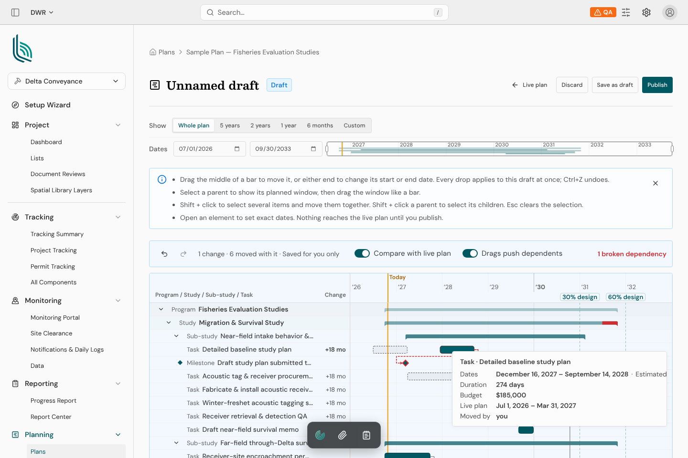
        <span class="pin" style="left:23.5%;top:18.5%">1</span>
        <span class="pin" style="left:50%;top:41%">2</span>
        <span class="pin del" style="left:39%;top:55.4%">3</span>
        <span class="pin del" style="left:65%;top:55.4%">4</span>
        <span class="pin del" style="left:57%;top:76.5%">5</span>
        <span class="pin" style="left:41%;top:81.5%">6</span>
      </div>
      <figcaption>
        <span class="cap-title">Draft mode, one drag in</span>
        <ol>
          <li><span><span class="verdict change">Change</span>Only a small "Draft" badge says this isn't the live plan. Jamie: "It shouldn't feel like you're looking at the main tool."</span></li>
          <li><span><span class="verdict change">Change</span>Four lines of instructions before the chart. The page explains a hard tool instead of making it easy.</span></li>
          <li class="del"><span><span class="verdict cut">Cut</span>"1 change · 6 moved with it." Jamie: "bad grammar and confusing."</span></li>
          <li class="del"><span><span class="verdict cut">Cut</span>Two toggles. Andy on move-only drags: "makes the system too technical."</span></li>
          <li class="del"><span><span class="verdict cut">Cut</span>Ghost bars of the live plan while editing. Andy: "did I move it? … which one's the real one?"</span></li>
          <li><span><span class="verdict change">Change</span>28px rows, 16px bars. Readable, but nothing invites a grab.</span></li>
        </ol>
      </figcaption>
    </figure>

    <figure>
      <div class="shot">
        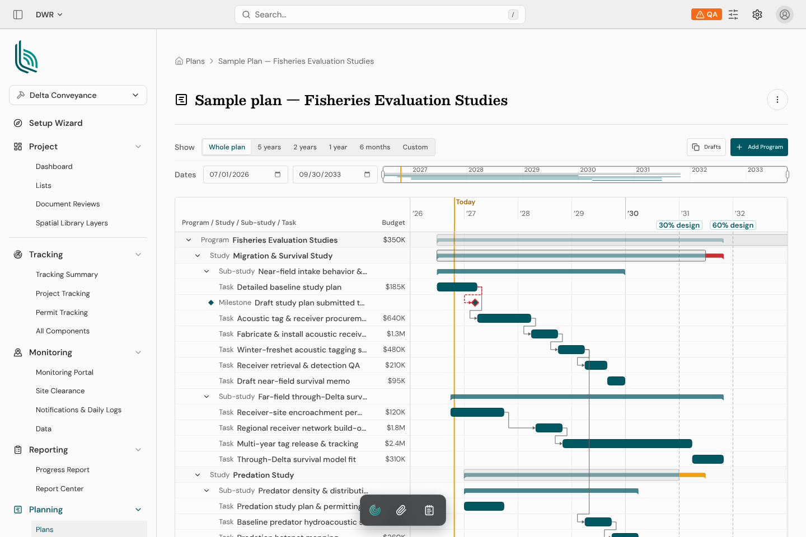
        <span class="pin add" style="left:73%;top:32.5%">1</span>
        <span class="pin" style="left:89%;top:27.5%">2</span>
        <span class="pin" style="left:90%;top:18.5%">3</span>
      </div>
      <figcaption>
        <span class="cap-title">The live plan</span>
        <ol>
          <li class="add"><span><span class="verdict keep">Keep</span>The scrubber: a miniature of the whole plan with a draggable window. Andy: "I like her scrubber idea."</span></li>
          <li><span><span class="verdict change">Change</span>Drafts live behind a button and a side panel. Jamie wanted a button "out here", as long as it's clear what it does.</span></li>
          <li><span><span class="verdict change">Change</span>Nothing on the page says who changed what, or when. A repo page leads with exactly that.</span></li>
        </ol>
      </figcaption>
    </figure>
  </section>

  <section>
    <span class="eyebrow">The check-in, Oct 26</span>
    <h2>What the conversation settled</h2>
    <p class="prose">Andy and Jamie talked for half an hour. Six moments in it turned into design constraints.</p>
    <div class="quotes">
      <blockquote>
        <p>"As a user, I would want it to feel like using GitHub. Where like I understand what's main, what's a feature branch. What hasn't been merged in yet."</p>
        <footer><b>Andy</b><span>→ the repo model</span></footer>
      </blockquote>
      <blockquote>
        <p>"You get one branch at a time as a user."</p>
        <footer><b>Andy</b><span>→ one draft per person per plan</span></footer>
      </blockquote>
      <blockquote>
        <p>"Just show the version that the data is meant to reflect."</p>
        <footer><b>Andy</b><span>→ no ghost bars while drafting</span></footer>
      </blockquote>
      <blockquote>
        <p>"The merge diff is, I think, the important— like, just let them do it here and then they can review it."</p>
        <footer><b>Andy</b><span>→ the diff lives at publish</span></footer>
      </blockquote>
      <blockquote>
        <p>"If you're gonna restore a snapshot, you wanna see a diff before you do it. And if you're gonna publish a draft, you wanna see a diff before you do it."</p>
        <footer><b>Jamie</b><span>→ one shared revisions screen</span></footer>
      </blockquote>
      <blockquote>
        <p>"Not everything has to land on this postage stamp sized worth of pixels."</p>
        <footer><b>Andy</b><span>→ start from the index, widen the aperture</span></footer>
      </blockquote>
    </div>
  </section>

  <section>
    <span class="eyebrow">Research</span>
    <h2>How WordPress revisions work</h2>
    <p class="prose">WordPress has refined one screen for comparing versions of a document since 2013 (version 3.6), and in 2026 Gutenberg added a visual diff inside the editor. I read the code for both: <code>wp-admin/includes/revision.php</code>, <code>revisions.js</code> and <code>revisions.css</code> in wordpress-develop, and <code>packages/editor/src/components/post-revisions-preview</code> in Gutenberg.</p>
    <div class="two">
      <div class="card">
        <h3>The classic screen</h3>
        <ul>
          <li>A slider with one tick per revision, oldest on the left. Hovering a tick shows a tooltip card: avatar, "Revision by Name", time ago and date.</li>
          <li>Previous and Next buttons at the slider's ends. They disable at either end.</li>
          <li>"Compare any two revisions" switches the slider to two handles that can't cross. Mark Jaquith renamed the toggle that way because even one handle always compares two.</li>
          <li>From and To author cards above the diff. Only the To side has the restore button, and it is disabled on the current revision.</li>
          <li>The diff is per field. Removed lines are pink with darker removed words; added lines are green with darker added words.</li>
        </ul>
        <div class="labels"><span>Previous</span><span>Next</span><span>Compare any two revisions</span><span>From:</span><span>To:</span><span>Current Revision by %s</span><span>Autosave by %s</span><span>Restore This Revision</span></div>
      </div>
      <div class="card">
        <h3>Gutenberg's visual diff (2026)</h3>
        <ul>
          <li>Revisions open inside the editor. The header holds the slider; Exit and Restore sit at the right.</li>
          <li>A "Show changes" toggle turns the color coding off to read clean content.</li>
          <li>A minimap rail beside the canvas marks each change. Click a mark to jump to it.</li>
          <li>Older revisions page in batches ("Revisions 1–25") with chevrons, so the slider never gets too dense.</li>
          <li>Since 23.8 each revision has its own URL, and the address bar follows the slider.</li>
        </ul>
        <div class="diffkey">
          <div><span class="sw add">Added</span><span>Green wavy underline; a whole block gets a solid green outline</span></div>
          <div><span class="sw del">Removed</span><span>Red strikethrough; a whole block gets a dashed red outline</span></div>
          <div><span class="sw mod">Changed</span><span>Dotted amber outline for format and attribute changes</span></div>
        </div>
        <p class="source">Gutenberg colors: added #00a32a, removed #d63638, modified #9a7000.</p>
      </div>
    </div>
    <p class="prose"><b>What carries over to plans:</b> the slider reads as a timeline, which is already what a planner is looking at. The two-handle compare answers "what changed between the CDFW submittal and now?" A dated plan has no text to strike through, so the visual diff becomes bars: the old position as a dashed outline, the new one solid, and a mark in the rail.</p>
  </section>

  <section>
    <span class="eyebrow">Vocabulary</span>
    <h2>Git shapes, planners' words</h2>
    <p class="prose">The interface borrows GitHub's structure (a branch picker, a latest-commit bar, a history count, a merge review) and none of its jargon. The words are Jamie's, already in her prototype.</p>
    <div class="tablewrap">
      <table>
        <thead><tr><th>Git</th><th>In Beacon</th><th>What it means here</th></tr></thead>
        <tbody>
          <tr><td>repository</td><td>Plan</td><td>The thing with a history.</td></tr>
          <tr><td>main</td><td>Live plan</td><td>What everyone sees and what reports read.</td></tr>
          <tr><td>commit</td><td>Version</td><td>v1, v2, v3… each with who, when, and one sentence about what moved.</td></tr>
          <tr><td>branch</td><td>Draft</td><td>Your private copy for trying dates. One per person per plan.</td></tr>
          <tr><td>working commits</td><td>Revision</td><td>Each drop in a draft. These are the stops on the review slider.</td></tr>
          <tr><td>merge / PR</td><td>Publish</td><td>Review the draft against Live, then it becomes the next version.</td></tr>
          <tr><td>tag / release</td><td>Named version</td><td>"Submitted to CDFW · v5".</td></tr>
          <tr><td>revert</td><td>Restore</td><td>A past version comes back as a new one. History is never erased.</td></tr>
        </tbody>
      </table>
    </div>
  </section>

  <section>
    <span class="eyebrow">The result</span>
    <h2>Walkthrough</h2>
    <p class="prose">Fisheries Evaluation Studies, seeded with seven versions from four people and two open drafts. Each screenshot is the running prototype at <code>/prototypes/plans-repo/</code>.</p>

    <figure>
      <div class="shot">
        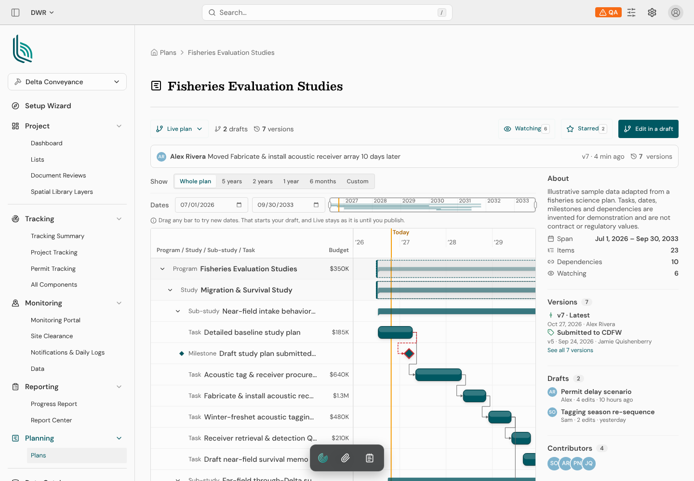
        <span class="pin" style="left:25.8%;top:26.8%">1</span>
        <span class="pin" style="left:41%;top:32.5%">2</span>
        <span class="pin add" style="left:62.5%;top:42.5%">3</span>
        <span class="pin" style="left:32.6%;top:45.8%">4</span>
        <span class="pin" style="left:93.4%;top:22%">5</span>
        <span class="pin" style="left:88%;top:38%">6</span>
      </div>
      <figcaption>
        <span class="cap-title">Live, laid out like a repo page</span>
        <ol>
          <li><span>The branch picker says where you are. Live is the default branch.</span></li>
          <li><span>The latest version as a commit line: Alex, the sentence, v7 · 4 min ago, and 7 versions linking to History.</span></li>
          <li class="add"><span><span class="verdict keep">Kept</span>Jamie's scrubber, unchanged.</span></li>
          <li><span>One line of help replaces her four-bullet instruction box. It says a drag starts your draft, and that Live stays put.</span></li>
          <li><span>One primary action per state: "Edit in a draft" here, "Review and publish" in your draft.</span></li>
          <li><span>The About rail: the latest version, the named "Submitted to CDFW" version, open drafts, contributors.</span></li>
        </ol>
      </figcaption>
    </figure>

    <figure>
      <div class="shot">
        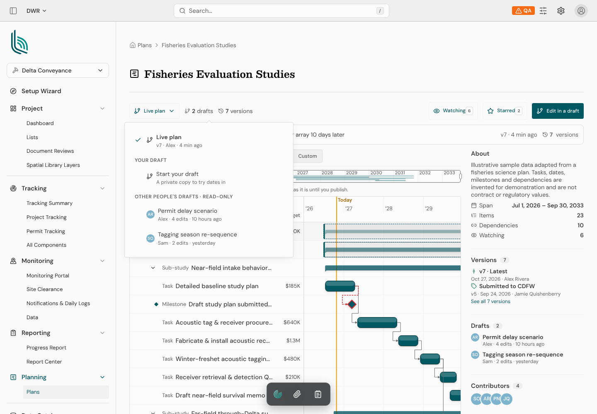
        <span class="pin" style="left:28%;top:34%">1</span>
        <span class="pin" style="left:28%;top:43%">2</span>
        <span class="pin" style="left:39%;top:47.5%">3</span>
      </div>
      <figcaption>
        <span class="cap-title">Switching is GitHub's branch menu</span>
        <ol>
          <li><span>Live, with its latest version and who made it.</span></li>
          <li><span>One slot for your draft. You either have one, or you can start one.</span></li>
          <li><span>Everyone else's drafts, labeled read-only up front, so nobody discovers it by trying.</span></li>
        </ol>
      </figcaption>
    </figure>

    <div class="states">
      <figure class="state"><div class="shot">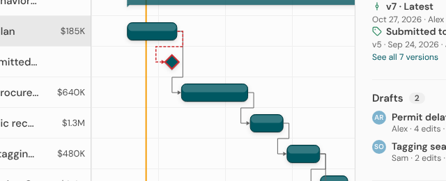</div><figcaption><b>Rest</b>Sits on a bezel and a soft cast shadow, with a lit top edge.</figcaption></figure>
      <figure class="state"><div class="shot"></div><figcaption><b>Hover</b>Rises 2px, the shadow spreads, and grips appear at both ends.</figcaption></figure>
      <figure class="state"><div class="shot">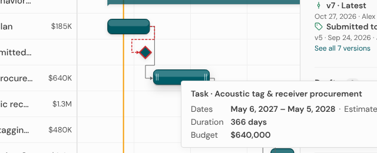</div><figcaption><b>Pressed</b>Sinks flat under the pointer before it moves.</figcaption></figure>
      <figure class="state"><div class="shot">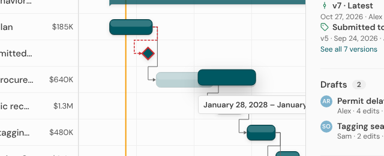</div><figcaption><b>Carried</b>Floats highest while the original fades behind it.</figcaption></figure>
    </div>

    <figure>
      <div class="shot">
        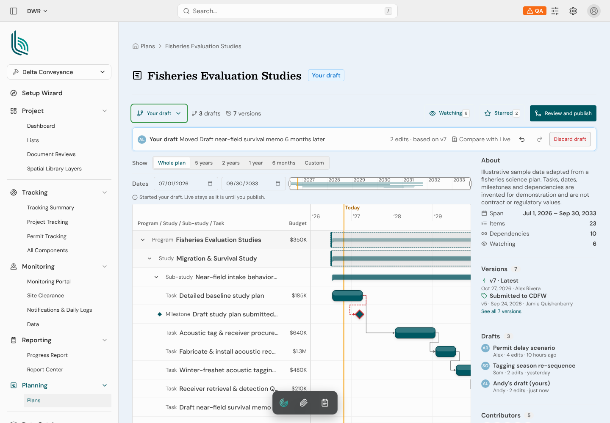
        <span class="pin" style="left:53.5%;top:17.8%">1</span>
        <span class="pin" style="left:78%;top:21%">2</span>
        <span class="pin" style="left:39%;top:32.9%">3</span>
        <span class="pin" style="left:87%;top:32.9%">4</span>
        <span class="pin" style="left:92.4%;top:22%">5</span>
        <span class="pin" style="left:66%;top:78.7%">6</span>
      </div>
      <figcaption>
        <span class="cap-title">Your draft, two drags in</span>
        <ol>
          <li><span>"Your draft" next to the plan's name.</span></li>
          <li><span>The whole page changes surface. The first try used the "subtle" info token, which is #fbfdff, effectively white. It is now the info blue at 7% over the page grey.</span></li>
          <li><span>The status band becomes the draft's: its latest change as a sentence, "2 edits · based on v7", and Compare with Live.</span></li>
          <li><span>Undo and redo, plus Discard draft. No toggles.</span></li>
          <li><span>Review and publish is now the one primary action.</span></li>
          <li><span>No ghost bars. The chart shows the draft and nothing else.</span></li>
        </ol>
      </figcaption>
    </figure>

    <figure>
      <div class="shot">
        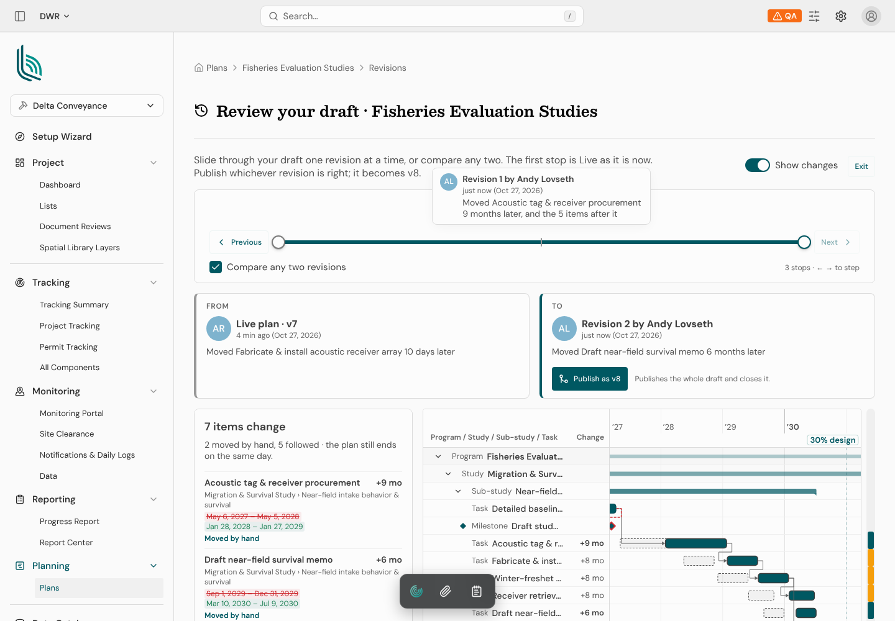
        <span class="pin" style="left:60.4%;top:24.5%">1</span>
        <span class="pin" style="left:24%;top:43%">2</span>
        <span class="pin" style="left:41.3%;top:52%">3</span>
        <span class="pin add" style="left:65.8%;top:61%">4</span>
        <span class="pin del" style="left:28.5%;top:84%">5</span>
        <span class="pin" style="left:97.2%;top:90%">6</span>
      </div>
      <figcaption>
        <span class="cap-title">Review and publish: WordPress revisions, for a plan</span>
        <ol>
          <li><span>One stop per revision, with Live as the first. Hovering shows WordPress's card: avatar, "Revision 1 by Andy Lovseth", when, and the sentence.</span></li>
          <li><span>"Compare any two revisions" starts on for a draft, so you see Live → your latest first.</span></li>
          <li><span>From and To cards, as in WordPress.</span></li>
          <li class="add"><span>The action sits on the To side, as WordPress's Restore does. Pull the handle back and it reads "Publish revision 1 as v8".</span></li>
          <li class="del"><span>Old dates struck on red, new dates on green: WordPress's diff colors, applied to dates.</span></li>
          <li><span>Gutenberg's minimap rail. Click a mark to jump to that row.</span></li>
        </ol>
      </figcaption>
    </figure>

    <figure>
      <div class="shot">
        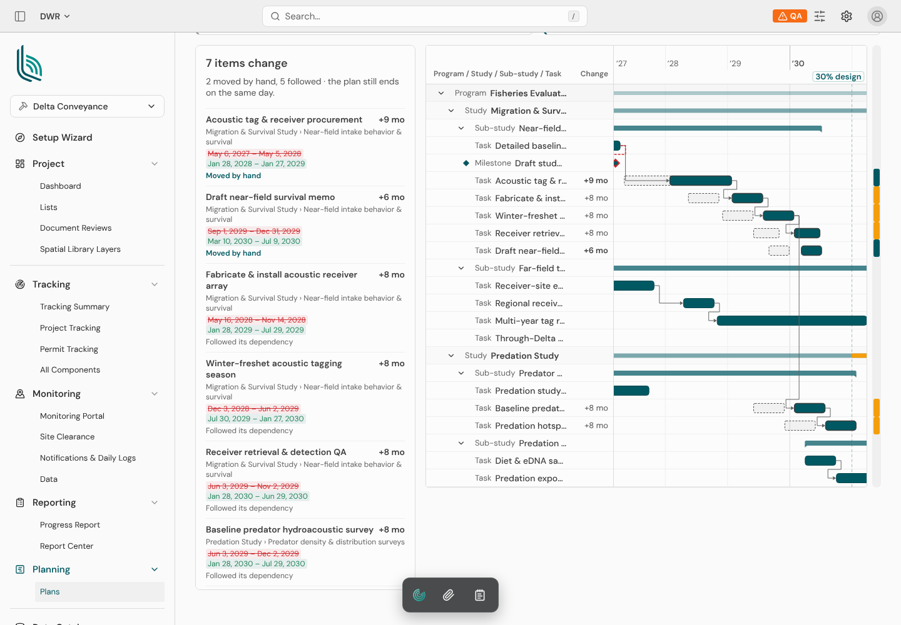
        <span class="pin" style="left:33%;top:14%">1</span>
        <span class="pin" style="left:27.8%;top:54.7%">2</span>
        <span class="pin" style="left:71.7%;top:28.8%">3</span>
        <span class="pin" style="left:66.1%;top:34.5%">4</span>
        <span class="pin" style="left:82%;top:10.1%">5</span>
        <span class="pin" style="left:97.2%;top:33%">6</span>
      </div>
      <figcaption>
        <span class="cap-title">The diff Jamie's draft mode was reaching for</span>
        <ol>
          <li><span>The summary in a sentence: 7 items change, 2 moved by hand, 5 followed, and the plan still ends on the same day.</span></li>
          <li><span>Each change says why it moved: "Moved by hand" or "Followed its dependency". That answers Jamie's "why did 25 things move?"</span></li>
          <li><span>Old positions dashed behind new ones. The ghost bars are back, but only here, where the page is about comparing.</span></li>
          <li><span>Jamie's Change column, reused.</span></li>
          <li><span>The chart zooms to the span that changed (2027–2030 here) instead of all seven years.</span></li>
          <li><span>Rail marks: teal for moved by hand, amber for followed.</span></li>
        </ol>
      </figcaption>
    </figure>

    <figure>
      <div class="shot">
        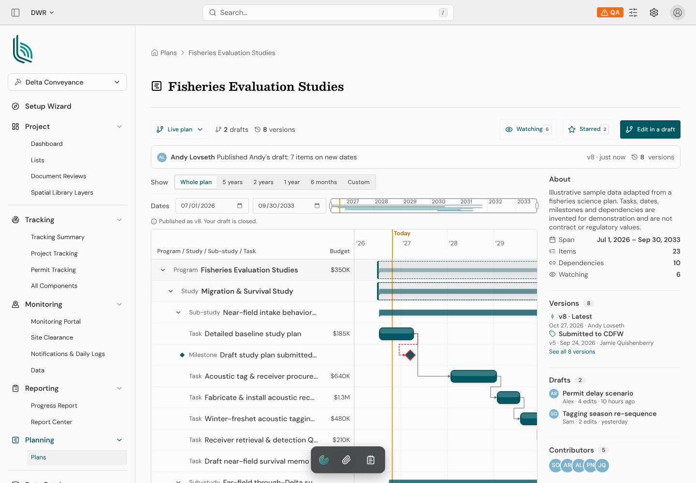
        <span class="pin" style="left:37.5%;top:32.5%">1</span>
        <span class="pin" style="left:30%;top:45.8%">2</span>
        <span class="pin" style="left:82.6%;top:65.5%">3</span>
      </div>
      <figcaption>
        <span class="cap-title">Published</span>
        <ol>
          <li><span>The merge lands as the next commit, v8, with a sentence nobody had to write.</span></li>
          <li><span>"Published as v8. Your draft is closed." Jamie's simplest path: "you make your edit, and then you hit publish, and then you're done."</span></li>
          <li><span>History grows by one. Every earlier version can still be compared or restored.</span></li>
        </ol>
      </figcaption>
    </figure>

    <figure>
      <div class="shot">
        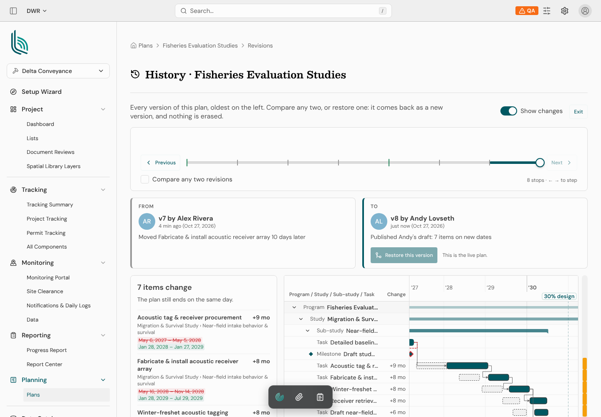
      </div>
      <figcaption>
        <span class="cap-title">History, on the same screen</span>
        <p>Without a draft, the same page becomes the plan's history: one stop per version, and the "Submitted to CDFW" tick drawn taller and green. "Restore this version" brings an old version back as a new one on top, so nothing is erased. This is Jamie's request that publishing and restoring share one diff.</p>
      </figcaption>
    </figure>
  </section>

  <section>
    <span class="eyebrow">Decision log</span>
    <h2>Each decision and why</h2>
    <ol class="log">
      <li class="commit">
        <div class="commit-head"><span class="sha">d01</span><h3>Build on Jamie's branch instead of starting over</h3><span class="state built">Built</span></div>
        <p>Her branch is one commit on top of the planning replica and merged cleanly. Her scheduler, draft overrides, publish path and scrubber are reused as they are. The new work is a thin "repo" layer that adds only history: versions, revisions, who and when.</p>
        <p class="why"><b>Why:</b> the hard parts (cascades, stale edits, conflicts) were already right. What wasn't working was the surface.</p>
        <div class="chips"><span class="chip">code</span><span class="chip">check-in</span></div>
      </li>

      <li class="commit">
        <div class="commit-head"><span class="sha">d02</span><h3>Open on the Plans index, where each plan reads like a repo</h3><span class="state built">Built</span></div>
        <p>Each row leads with the latest version as a commit line: avatar, who, one sentence, "v7 · 4 min ago". Open drafts hang under their plan as child rows, as Andy put it in the check-in. Counts for versions, watchers and stars sit underneath, and a miniature of the schedule with today marked sits on the right.</p>
        <figure>
          <div class="shot">
            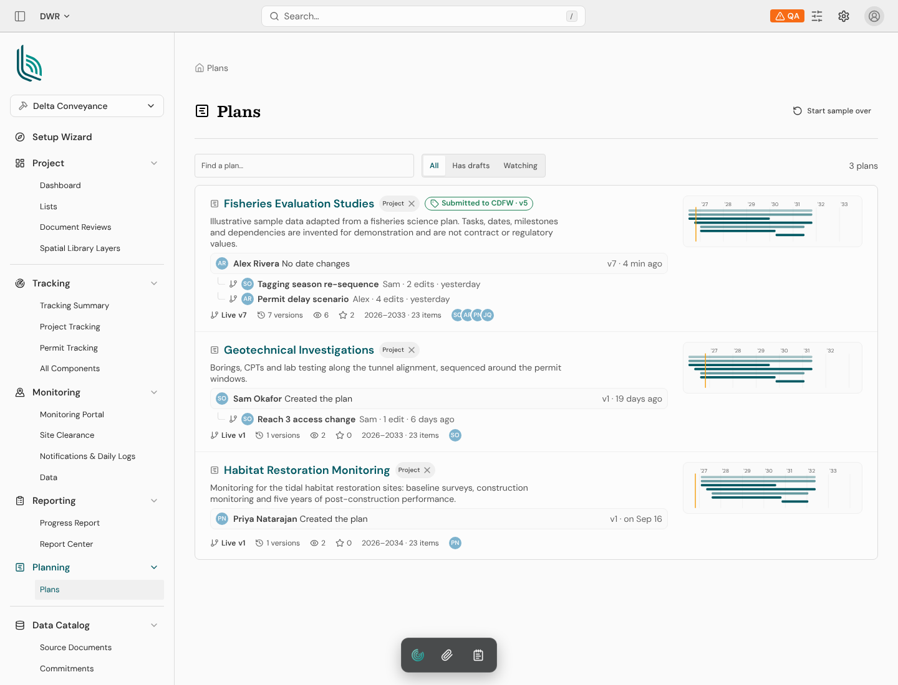
            <span class="pin" style="left:48%;top:38.5%">1</span>
            <span class="pin" style="left:39%;top:42.5%">2</span>
            <span class="pin" style="left:86%;top:32%">3</span>
            <span class="pin" style="left:55%;top:29.7%">4</span>
            <span class="pin del" style="left:46%;top:29.7%">5</span>
            <span class="pin del" style="left:31%;top:63.5%">6</span>
          </div>
          <figcaption>
            <span class="cap-title">First pass, and what it still needs</span>
            <ol>
              <li><span>The latest version as a commit line. In this capture it read "No date changes", which was a seeding bug (dates weren't shifting). Fixed: it now reads "Moved Fabricate & install acoustic receiver array 10 days later."</span></li>
              <li><span>Open drafts as child rows: owner, edit count, and how far behind Live they are.</span></li>
              <li><span>A schedule miniature with today in amber. The whole row is a link.</span></li>
              <li><span>A named version shows as a release tag.</span></li>
              <li class="del"><span><span class="verdict cut">Fix</span>The visibility pill shows a remove "×". Swap it for a badge.</span></li>
              <li class="del"><span><span class="verdict cut">Fix</span>"1 versions". Pluralize.</span></li>
            </ol>
          </figcaption>
        </figure>
        <div class="chips"><span class="chip">Andy's notes</span><span class="chip">check-in</span><span class="chip">GitHub repo page</span></div>
      </li>

      <li class="commit">
        <div class="commit-head"><span class="sha">d03</span><h3>One draft per person per plan</h3><span class="state built">Built</span></div>
        <p>Asking for a draft gives you the one you already have. Other people's drafts stay visible and read-only, with "Copy to my draft". Each draft shows how many versions Live has moved since it started, so an old one reads as old.</p>
        <p class="why"><b>Why:</b> Andy: "If you made it universally flexible, it's very complex. If you put constraints … that make it simple." One branch removes the drafts list, naming and switching from the everyday path.</p>
        <div class="chips"><span class="chip">check-in</span></div>
      </li>

      <li class="commit">
        <div class="commit-head"><span class="sha">d04</span><h3>Drags start a draft, and exact edits stay live</h3><span class="state wip">Drags built</span></div>
        <p>Dragging a bar on Live quietly checks you out onto your draft: the page changes surface, and the drop lands as your draft's first revision. Typing exact dates in the drawer still saves straight to Live, as it does today. The drawer isn't wired into this prototype yet.</p>
        <p class="why"><b>Why:</b> Jamie split edits into two kinds. A precise edit shows its effects before you confirm it. A sweeping drag cascades through dependents and is easiest to judge after the fact. Andy put it as: "There is no just edit. You're always checking out onto a branch."</p>
        <div class="chips"><span class="chip">check-in</span><span class="chip">"handwave the complexity"</span></div>
      </li>

      <li class="commit">
        <div class="commit-head"><span class="sha">d05</span><h3>No toggles in draft mode</h3><span class="state built">Built</span></div>
        <p>Dependents always follow a drag, so the "Drags push dependents" toggle goes. While drafting, the chart shows only the draft, with no ghost bars of Live, so the "Compare with live plan" toggle goes too. Undo and redo stay.</p>
        <p class="why"><b>Why:</b> Andy found the move-only variant too technical. When a planner really wants one bar to move alone, the honest move is to unhook its dependency first. Ghost bars made people ask "did I move it?" The comparison isn't dropped; it moves to the review screen (d06), where comparing is the whole job.</p>
        <div class="chips"><span class="chip">check-in</span><span class="chip">screenshot 04–07</span></div>
      </li>

      <li class="commit">
        <div class="commit-head"><span class="sha">d06</span><h3>One revisions screen for both publish and restore</h3><span class="state built">Built</span></div>
        <p>A full page modeled on WordPress revisions. A slider with one stop per revision (Live is the first stop), with Previous and Next, and a tooltip on each tick with avatar, who, when and the sentence. "Compare any two" gives two handles. From and To cards sit above, and Exit and "Publish this revision" sit at the right. Below them: a list of what changed, and the chart in its new state, with old positions dashed, a "Show changes" toggle and a minimap rail of changes.</p>
        <p class="why"><b>Why:</b> both Jamie and Andy called this the important surface. WordPress has spent 13 years making "what will this change?" readable, and the slider maps onto a timeline almost exactly. Publishing any revision, not only the latest, follows WordPress's "Restore This Revision".</p>
        <div class="chips"><span class="chip">WordPress research</span><span class="chip">check-in</span></div>
      </li>

      <li class="commit">
        <div class="commit-head"><span class="sha">d07</span><h3>Bars you want to pick up</h3><span class="state built">Built</span></div>
        <p>A new <code>tactile</code> density on Jamie's chart (hers stays the default). At rest a bar sits on a short hard shadow plus a soft one, with a lit top edge. Hovered, it rises 2px, the shadow spreads, and grip lines appear at its ends. Pressed, it sinks flat. While dragged, the carried bar floats highest and the original fades.</p>
        <div class="numbers">
          <span>row <del>28px</del> <ins>44px</ins></span>
          <span>bar <del>16px</del> <ins>26px</ins></span>
          <span>milestone <del>12px</del> <ins>20px</ins></span>
          <span>estimated radius <del>4px</del> <ins>7px</ins></span>
          <span>hit pad <del>4px</del> <ins>6px</ins></span>
        </div>
        <p class="why"><b>Why:</b> Andy: bars "should make me want to grab them. Depth, bezel, shadow. Hover, active states." Bigger targets also make dragging more forgiving, which matters more once every drag lands as a revision.</p>
        <div class="chips"><span class="chip">Andy's notes</span></div>
      </li>

      <li class="commit">
        <div class="commit-head"><span class="sha">d08</span><h3>Changes described the way a planner would say them</h3><span class="state built">Built</span></div>
        <p>Every version and revision carries one sentence: "Moved Acoustic tag & receiver procurement 3 weeks later, and the 5 items after it." "Extended Receiver-site encroachment permits by 4 weeks." The same sentence appears on the index, the history and the slider's tooltips.</p>
        <p class="why"><b>Why:</b> Jamie on "1 change · 6 moved with it": "I know what it means, but … it's bad grammar and confusing." A commit message is how a repo makes history readable, and here the planner doesn't have to write it.</p>
        <div class="chips"><span class="chip">check-in</span></div>
      </li>

      <li class="commit">
        <div class="commit-head"><span class="sha">d09</span><h3>Prototype with a believable history</h3><span class="state built">Built</span></div>
        <p>The first visit seeds three plans. Fisheries Evaluation Studies gets seven versions over three months from four people, one of them named "Submitted to CDFW", plus two open drafts (Alex's "Permit delay scenario" with four revisions, Sam's "Tagging season re-sequence"). Every seeded edit goes through Jamie's real scheduler, so the cascades are real.</p>
        <p class="why"><b>Why:</b> you can't judge a history UI with an empty history. This follows the team's standing rule to show the real rendered thing, never a schematic.</p>
        <div class="chips"><span class="chip">team practice</span></div>
      </li>
      <li class="commit">
        <div class="commit-head"><span class="sha">d10</span><h3>Review zooms to what changed</h3><span class="state built">Built</span></div>
        <p>The review chart sets its range to the earliest and latest date of any changed item, from either side, plus two months. The outline column starts at 300px instead of 420px.</p>
        <p class="why"><b>Why:</b> the first render fitted a seven-year plan beside the change list, and every bar became a sliver. The reviewer needs the part that moved. The scrubber is still there to widen the view.</p>
        <div class="chips"><span class="chip">screenshot review</span></div>
      </li>

      <li class="commit">
        <div class="commit-head"><span class="sha">d11</span><h3>Tactile for editing, compact for reviewing</h3><span class="state built">Built</span></div>
        <p>The plan page draws the chart at the tactile density. The revisions screen keeps Jamie's compact one.</p>
        <p class="why"><b>Why:</b> editing is about one bar at a time, so it gets big targets and depth. Reviewing is about scanning many rows at once, so it gets density. The density is an option on the same component, so neither page forks it.</p>
        <div class="chips"><span class="chip">design judgment</span></div>
      </li>

      <li class="commit">
        <div class="commit-head"><span class="sha">d12</span><h3>Publish any revision, and nothing is ever erased</h3><span class="state built">Built</span></div>
        <p>The To handle decides what gets published, so you can publish your draft as it stood two drops ago and drop what came after. Restore always adds a new version on top. Undo inside your own draft does remove the last revision, because a draft is a scratchpad.</p>
        <p class="why"><b>Why:</b> WordPress lets you restore any revision, which makes trying things safe. In a repo the published history is the record, so it only ever grows.</p>
        <div class="chips"><span class="chip">WordPress research</span><span class="chip">GitHub</span></div>
      </li>
    </ol>
  </section>

  <section>
    <span class="eyebrow">Gaps and open questions</span>
    <h2>What this surfaced</h2>
    <div class="two">
      <div class="card">
        <h3>Lego gaps (for /request-lego)</h3>
        <ul>
          <li><b>esa-popover</b> only centers its panel. The branch menu needs start alignment, and the prototype works around it.</li>
          <li><b>esa-button</b> has no runtime disabled API. The disabled look comes from a class, so script has to set both. Jamie hit the same gap.</li>
          <li><b>esa-icon</b> lacks the git glyphs (git-branch, git-merge, git-commit) and undo-2/redo-2. They're filled locally.</li>
          <li>No two-handle stepped slider. <code>bcn-revision-slider</code> is the new reusable home.</li>
        </ul>
      </div>
      <div class="card">
        <h3>For Jamie and Andy to decide</h3>
        <ul>
          <li>Drawer edits saving straight to Live: still right, or should every change go through a draft?</li>
          <li>Named drafts versus one draft per person. Her "what if" scenarios want names, and this build has one slot each.</li>
          <li>A draft that falls far behind Live: today it shows "Live has N newer versions". Should it offer to start over?</li>
          <li>Snapshots as named versions. Should naming happen at publish ("Submitted to CDFW"), or on any version afterward?</li>
          <li>The four-tier hierarchy in a narrow review chart. The outline truncates names at 300px.</li>
        </ul>
      </div>
    </div>
  </section>
</main>
